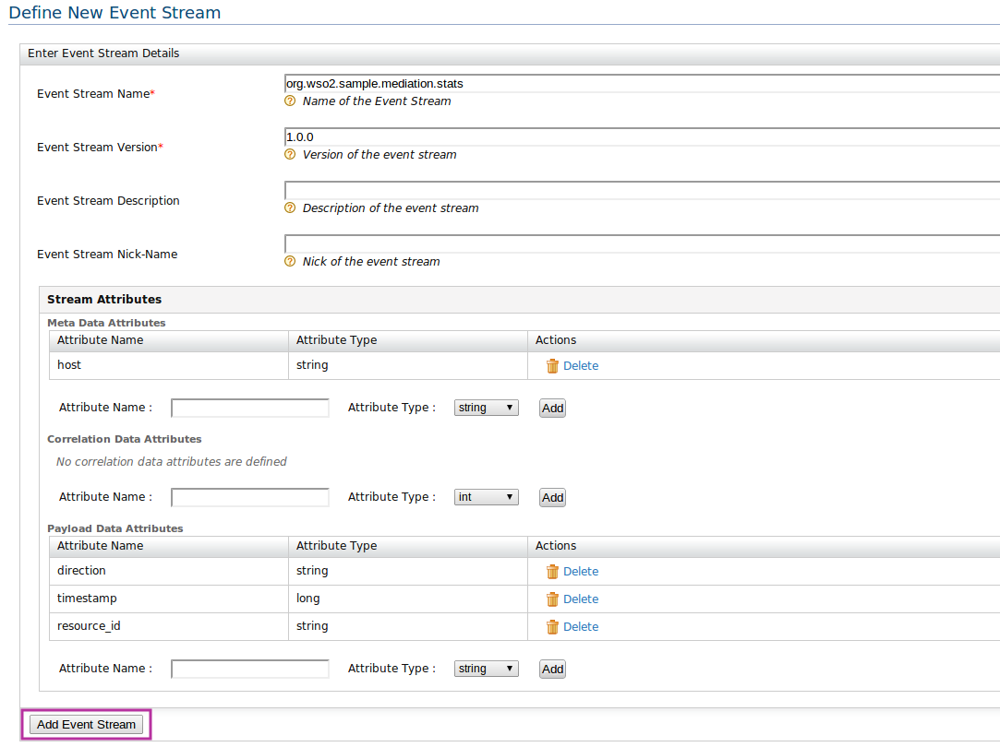

Event Streams are another main part in CEP. All the processes are happens based on streams. Here Event streams needs to defined as WSO2Event Stream Definition. All the streams which are created stored in the registry (governance) of the CEP.
1. Start the CEP, log in to its management console, select Event Streams and click Add Event Stream.
2. Enter details in the form that appears and click the Add Event Stream button at the end of the form. For example

Here, fill the necessary fields according to the stream definition that you want to create.
To create an event builder or execution plan it is mandatory to create necessary event streams before hand.
Other than the server UI, you can also define the stream definition using a config file which is in the <CEP_HOME>/repository/conf/stream-manager-config.xml. But this file used to create streams only in the server start-up (This file is not hot deploy-able). Please see the below syntax
<streamManagerConfiguration xmlns="http://wso2.org/carbon/streammanager">
<streamDefinition name="org.wso2.sample.stock.quote.basic" version="1.0.0">
<payloadData>
<property name="price" type="DOUBLE"/>
<property name="symbol" type="STRING"/>
</payloadData>
</streamDefinition>
<streamDefinition name="org.wso2.sample.twitter.feed" version="1.0.0">
<payloadData>
<property name="company" type="STRING"/>
<property name="wordCount" type="INT"/>
</payloadData>
</streamDefinition>
<streamDefinition name="org.wso2.sample.predicted.stock.quotes" version="1.0.0">
<payloadData>
<property name="company" type="STRING"/>
<property name="amount" type="DOUBLE"/>
<property name="words" type="LONG"/>
</payloadData>
</streamDefinition>
<streamDefinition name="twitterFeed" version="1.0.0">
<payloadData>
<property name="company" type="STRING"/>
<property name="wordCount" type="INT"/>
</payloadData>
</streamDefinition>
</streamManagerConfiguration>